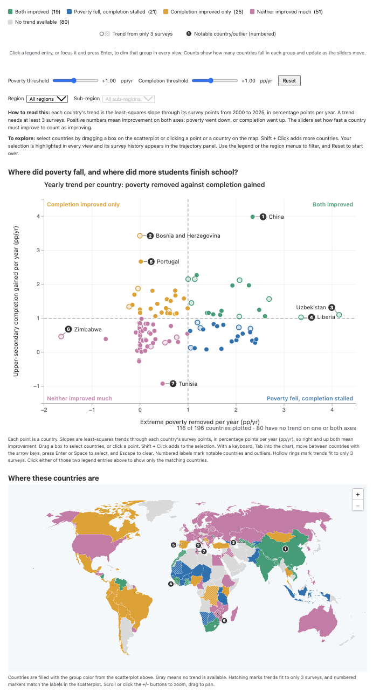
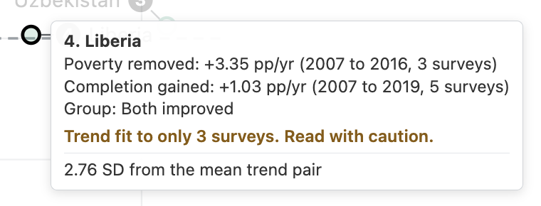

Demo Video
Embedded MP4 demo video using the HTML5 <video> tag. Put your video file in the files folder and update the file name below.
Visualization explanation
Our visualization has three linked views that answer one question in stages: which countries reduced extreme poverty without raising upper-secondary completion, where those countries are, and how much survey data supports each trend. This section shows each view and interaction, then walks through one way to use them together. The reasoning behind our encoding and layout choices is in the Design Process section below.
Overview

The page opens on the scatterplot and the map. Each point in the scatterplot is a country, placed by how fast its extreme poverty rate fell (x-axis) and how fast its upper-secondary completion rate rose (y-axis), both in percentage points per year. The dashed threshold lines divide the plot into four groups, and each country takes its group's color in both the scatterplot and the map. The scatterplot shows 116 countries. Another 80 are gray on the map because they lack the three surveys needed to fit a trend. At the default thresholds, 21 countries fall in "Poverty fell, completion stalled," the group our motivating question asks about.
Brushing and Linking

Dragging a box on the scatterplot selects every country inside it, and the map outlines the same countries while fading the rest. Selection works in the other direction too: clicking a country on the map highlights its point in the scatterplot. Brushing the lower-right quadrant shows that 16 of these 21 countries are in Africa, most of which are in Western Africa. That pattern is hard to see from the scatterplot alone.
Trajectory Panel
![Two stacked line charts of extreme poverty rate and upper-secondary completion rate by year for [COUNTRIES], with survey points, solid lines between surveys and dashed least-squares trend lines.](images/Trajectory Panel.png)
The trajectory panel fills in when countries are selected. Each selected country appears in both charts, which share one year axis so the two indicators line up in time. This panel shows the data behind each point in the scatterplot. A viewer can see whether a trend rests on many evenly spaced surveys or on a few points far apart. The three selected countries, Canada, USA, and Mexico show many interesting trends. Notably, Canada and USA have very high upper-secondary completion rates and very low levels of extreme poverty. Due to the lack of change in the data over many years for the USA, it is highlight in pink. Meixco however is noticeably trending in the right direction for upper-secondary education, but trending negatively for extreme poverty.
Details on Demand

Hovering any country in the scatterplot, the map or the trajectory panel opens a tooltip with that country's values, so the views themselves stay uncluttered. The survey count matters most for countries drawn as hollow rings, whose trends are fit to only three surveys. Liberia is one of these, so its position in the plot should be read with more caution than a country with a long survey record.
Adjusting the Thresholds
![Scatterplot and map with the completion threshold at [VALUE A] pp/yr.](images/Threshold 1.png)
![Scatterplot and map with the completion threshold at [VALUE B] pp/yr, with more countries in the lower groups.](images/Threshold 2.png)
What counts as meaningful progress depends on the viewer, so the thresholds are adjustable. Moving a slider moves its dashed line in the scatterplot and recolors every country in both views as it crosses the line. It's clear that as the thresholds rise, an increasing number of countries are grouped with "neither improved much" and fewer countries show improvement on either axis.
Where Does Your Country Fit?
![The Where does your country fit panel with [COUNTRY] chosen, comparing its progress with other countries and its sub-region and listing organizations working on these goals.](images/Fit Panel.png)
Choosing a country in this panel selects it in every view above and compares its progress with other countries and with its sub-region. The panel also lists organizations working on these goals, so a viewer who finds a gap in their own country or region has a place to start.
Walkthrough
One way to use the visualization from start to finish:
- Start at the overview. The legend explains the four group colors, the gray used for countries without a trend, and the markers for three-survey trends and numbered outliers. You can also filter by region and sub-region.
- Set the two thresholds to the yearly improvement you consider meaningful. The dashed lines and colors update as the sliders move.
- Drag a box over the lower-right quadrant to select the countries where poverty fell but completion stalled. The map shows where they are.
- Read the trajectory panel to see the surveys behind each selected country's trends.
- Hover any country for its exact slopes, year spans and survey counts. Treat hollow rings and hatched countries with more caution.
- Use the region and sub-region menus, or click a legend entry, to narrow the view.
- Choose a country in "Where does your country fit?" to compare it with its sub-region.
- Press Reset to clear the selection and start over.
Our presentation slides are available here.
Data Analysis
Data Sources
All indicator data comes from the UN SDG Global Database, run by the UN Statistics Division. We exported the full data for Goal 1 (No Poverty) and Goal 4 (Quality Education) as Goal1-data.csv and Goal4-data.csv, together with CodeDescriptions.csv, which decodes the dimension codes in those files. From the two goals we use one series each, which together answer our question of whether falling poverty and rising school completion happen in the same countries:
| Indicator | Series code and filters | Meaning |
|---|---|---|
| 1.1.1 Extreme poverty | SI_POV_DAY1, Location = all areas, Age = all ages, Sex = both sexes |
Percent of the population living below the international poverty line |
| 4.1.2 Completion rate | SE_TOT_CPLR, Education level = upper secondary, Location = all areas, Quantile = total, Sex = both sexes |
Percent of young people a few years above the graduation age who finished upper-secondary school |
Two more sources support the views. Country boundaries are Natural Earth 1:50m (see Acknowledgments). Region and sub-region names for the region filter come from the UN M49 standard area codes, through the ISO-3166-Countries-with-Regional-Codes table.
Data Types
- Country (categorical key): the 3-digit UN M49 code, zero-padded (for example
004for Afghanistan). The same code is the ISO 3166-1 numeric code, so it joins the SDG data, the map boundaries, and the region table without matching names. - Year (ordinal, temporal): the survey year, 2000 to 2025.
- Poverty rate and completion rate (quantitative, 0 to 100%): one value per country per survey year. Surveys are irregular: a country may have one survey a year or one a decade.
- Trend slopes (quantitative, diverging around 0): derived, in percentage points per year. Poverty is stored as poverty removed per year, so on both axes a positive value means improvement.
- Survey count (quantitative): how many surveys each slope rests on. Derived from it, the 3-survey flag (binary) marks slopes fit to the minimum number of points.
- Group (categorical, 4 values): derived in the browser from the two slopes and the two threshold sliders, so it changes as the user moves them.
- Region and sub-region (categorical, hierarchical): 5 M49 regions, split into sub-regions.
Preprocessing
Preprocessing is done with three Python scripts in scripts/ (pandas and NumPy). The README gives the exact commands.
build.pystacks the Goal 1 and Goal 4 exports into one long table and decodes every dimension code withCodeDescriptions.csv(it also fixes one wrong description in that file, the age code<7Y). The database mixes countries with regional aggregates such as "Sub-Saharan Africa," so a geographic area whose only Nature code isNis labeled an aggregate and dropped. It then picks each series with the filters in the table above, asserts there is at most one value per country and year, and pivots to a country by year table. For each country it fits a least-squares line (np.polyfit, degree 1) to the survey points of each indicator, and only when there are at least 3 points across at least 2 different years. The slope of that line is the country's trend.export_json.pywrites the slopes, survey spans, survey counts, and the raw survey points into one small file,data/sdg.json, and flips the sign of the poverty slope so that positive means poverty fell. Group membership is not computed here, because it depends on the sliders.build_map.pyjoins simplified Natural Earth boundaries to the SDG data by M49 code and writesdata/world.geojson.build_regions.pywritesdata/regions.csv, the M49 region and sub-region of each country. It uses the M49 intermediate region where there is one, so the two largest sub-regions, Sub-Saharan Africa and Latin America and the Caribbean, are split into smaller groups like Western Africa and South America. Kosovo is in the SDG data but has no ISO code, so it is added by hand under Southern Europe.
What the Data Covers
After preprocessing, data/sdg.json holds 196 countries with 1,845 poverty survey points and 1,244 completion survey points. 141 countries have a poverty trend, 130 have a completion trend, and 116 have both. Only those 116 can be placed on the scatterplot and colored on the map; the other 80 are gray. Of the 116, 22 have at least one trend fit to only 3 surveys, which we flag in every view.
Coverage is uneven, and this shapes what the visualization can say. The 116 countries are 38 in Africa, 33 in Europe, 24 in Asia, 20 in the Americas, and only 1 in Oceania (Australia), so the page says little about the Pacific. Many high-income countries have extreme poverty near 0% in every survey, so their poverty trend is close to zero: they can fall into "completion improved only" or "neither improved much" because there was no extreme poverty left to remove, not because they did badly. The trajectory panel shows the actual rates so users can tell these cases apart. Finally, a linear trend is a summary. It shows a country's average direction since 2000, but not a sudden change such as the effect of COVID-19 on school completion after 2020.
Task Analysis
Following the Design Study "Lite" methodology, we began our task analysis with a mock interview with Groups 6, 7 and 8. From that conversation and our motivating questions, we identified what our users need to do with the data, translated those needs into domain tasks, and ranked them by importance. We then classified each task using Munzner's abstract task typology so that every design decision could be traced back to a specific user need.
Goals
Our users range from students and teachers studying UN initiatives to UN staff, diplomats, and nonprofit managers deciding where to direct attention and funding. Although their expertise differs, they share one goal: to understand whether progress on Goal 1 (No Poverty) and Goal 4 (Quality Education) is happening together, and where it is not. Because the UN reports the two goals separately, answering this requires comparing two trends at once for more than 100 countries, which is not possible from the raw tables alone. Since we assume users already know what each goal is, our tasks focus on comparing progress rather than defining the goals.
Task Table
| Domain Task (ranked) | Query (Low) | Search (Mid) | Analyze (High) | Supported by |
|---|---|---|---|---|
| 1. Which countries are reducing extreme poverty and raising upper-secondary completion at the same time? | Summarize | Explore | Discover | Scatterplot groups, map |
| 2. Which countries are making progress on only one of the two goals? | Identify | Explore | Discover | Scatterplot groups, map, box selection |
| 3. Is each country's current pace fast enough to count as meaningful progress before 2030? | Summarize | Explore | Derive | Trend slopes, threshold sliders |
| 4. Where do these patterns occur, and do they differ across regions? | Compare | Browse | Discover | Map, region and sub-region filters |
| 5. How have a specific country's poverty and completion rates actually changed across surveys? | Identify | Lookup | Present | Trajectory panel |
| 6. Where does my country fit compared with its sub-region and the world, and who is working on these goals? | Compare | Lookup | Present | Country panel |
Abstract Tasks
Munzner's typology describes each task at three levels. The analyze level explains why the user is there: to discover new patterns, to present information they already know, or to derive new data from existing data, such as our yearly trend slopes. The search level describes what the user already knows. In a lookup, they know both the target and its location; in locate, only the target; in browse, only the location; and in explore, neither. The query level describes how many targets are involved: one (identify), several (compare), or all of them (summarize).
Ranking Rationale
Tasks 1–3 rank highest because they directly answer our motivating questions. They are exploratory: users usually begin without a particular country in mind and need to see every country at once to find where the goals move together and where they diverge. Task 3 is a derive task because the raw data contains only survey values, so we calculated each country's yearly rate of change and let users set the threshold for meaningful progress. We do not project values to 2030, since a linear projection from a few surveys would suggest more certainty than the data supports. Tasks 4–6 serve users who already have a region or country in mind, such as a diplomat or a nonprofit manager focused on one area. Early in the project we also considered tasks about gender gaps (indicator 4.5) and rural versus urban poverty (indicator 1.2), but we dropped them because our project focuses on whether progress on Goal 1 and Goal 4 is correlated at the country level. Breaking each country down by gender or location would have shifted the focus from the relationship between the two goals to inequalities within a single goal, which is a different question.
Process
The ranking shaped how users move through the tool, following Shneiderman's mantra of overview first, zoom and filter, then details on demand. The scatterplot and world map provide the overview for Tasks 1–3. The threshold sliders and region filters let users zoom and filter for Tasks 3 and 4. Brushing and linking connects the views, so countries selected in one view are highlighted in all of them, and the trajectory and country panels provide details on demand for Tasks 5 and 6. Because the exploratory tasks matter most, the two overview views take up the most space on the page.
Design Process
Our design moved through four stages: individual paper sketches, a combined Tableau prototype, an informal usability test of that prototype with three peers, and the D3 implementation on this page, which we continued to revise after it was running.
Sketches
We began with paper sketches of individual views. The three below correspond to the three views of the final design, and each was changed slightly along the way.

The scatterplot sketch already had the main parts of the final view: one point mark per country, with the two rates of change on aligned position axes, the most effective channel for quantitative attributes. It used color hue and shape, the identity channels suited to categorical data, to encode region. In the final design hue carries the group a country falls in (which quadrant of the plot), and we dropped shape. Region is now carried by the map, since spatial region is the strongest identity channel and the map shows it directly.

The map sketch combined a choropleth (completion, binned into three ordinal levels and drawn as hatching) with a symbol map (poverty rate as circle size). The sketch itself shows the main risk of symbol maps: the circles over West Africa overlap and hide each other, an occlusion problem. Area is also a weak magnitude channel, which viewers tend to underestimate. The final map is a choropleth filled with the same group colors as the scatterplot, so the two views share one encoding and one legend. We reimplemented hatching in the final map with a different job: to mark countries whose trends rest on only three surveys.

The trajectory sketch asked whether countries are on pace for the 2030 target. It separated measured data (solid) from estimates (dashed) so that "users don't mistake estimates for measurements," and the final trajectory panel keeps that convention: solid lines connect measured survey points and dashed lines show least-squares fits. The final panel shows poverty and completion in two stacked charts that share one year axis, so the two indicators for a country line up in time. We did not carry over the projection to 2030 since many trends rest on few surveys (22 of the 116 countries we plot have a trend fit to only three), and extending those fits a decade past the data would present a straight-line extrapolation as if it were a forecast.
Tableau Prototype

We then combined the views in a Tableau dashboard which shows the final structure we have now: a quadrant scatterplot, a map in the same colors, a trend view for selected countries, and sliders that move the quadrant thresholds. This was the version our peers evaluated.
Usability Testing (Peer Evaluation)
Three peers reviewed the design we submitted using the course's ICE-T form, which rates statements under Insight, Time, Essence, and Confidence on a 1 to 7 scale, and asks for comments. The comments refer to the Tableau prototype's colors, footnote, and empty trend view which helped us guide our interactive visualization designing process.
The reviewers liked the linked views and the map. One wrote that "the linked scatterplot, map, and trend view work really well together," another that "the map is visually appealing," and one noted that the tooltip "shows the time span behind each country's trends." We kept all of these. The lowest ratings and the critical comments clustered on a few problems, which the below table pairs with the change we made in the final design.
| Feedback | Change in the Final Design |
|---|---|
| "The brown, orange, and gray are difficult to distinguish." The same reviewer suggested that color carry meaning, "where Red is bad and Green is good." | We replaced that palette with a colorblind safe one and reserved gray for countries with no trend. "Both improved" is green. We did not use a red and green pair, because an intermediate palette with both would likely fail a colorblindness check. |
| "Threshold is confusing" (Essence, rated 3) and "Threshold change?" | The thresholds default to 1 as in the prototype but we include notes on how to interpret threshold. Each slider shows its value in percentage points per year, and the dashed lines and map colors update as it moves. |
| "Poverty/completion y axis is confusing," and the quadrants "could be misleading because low poverty and low completion is on the bottom right" (rated 2). | The prototype's y-axis title was cut off. Both axis titles are now written in full and phrased as gains ("extreme poverty removed," "completion gained"), so right and up both mean improvement. The four group names sit in the corners of the plot in their group colors. |
| "Line graph is hard to follow," "a lot of outliers on line graph," and "trends line over time is difficult to understand" (rated 3). One reviewer asked to make trends "easier to compare when several countries are highlighted." | The trajectory panel shows each indicator in its own chart on a shared year axis. Hovering finds the nearest point, fades the other countries, and shows that country's values. The panel still starts empty, which one reviewer said "helps a lot." |
| "Brushing and linking view is a lot for users to understand" and "big cognitive load to understand" (rated 2). | Each view has a caption explaining its interactions, the map has explicit zoom buttons, and a reset button clears the selection. A selection made in one view clears the brush box in the scatterplot, so the views never show conflicting selections. |
| "It could be even clearer how missing data or different survey periods affect the classifications and trend estimates." | Trends fit to only three surveys are drawn as hollow rings in the scatterplot and hatched on the map, and the tooltip gives each trend's survey count and year span. Countries with no trend are gray on the map, and the scatterplot reports how many there are. |
Design Choices in the Final Visualization
Encoding: The scatterplot puts the two most important attributes, each country's yearly change in poverty and in completion, on position along common scales, the highest-ranked channel. The group is a categorical attribute derived from those two positions, so it uses color hue, an identity channel. Because group membership is visible in both position and color, countries in the same group read as related by Gestalt similarity, and the same colors on the map let the eye match countries across views.
Multiple Views: The three views are juxtaposed. They show the same countries with different encodings while sharing the same color scheme, and selecting countries in one highlights them in the others (brushing and linking). Juxtaposition follows the rule of thumb "eyes beat memory": a viewer compares the scatterplot, the map, and the trends side by side without holding one in memory. We accept the known cost of coordinated multiple views, that they are harder to learn, and our testing reflected it. The captions, the reset button, and the empty until selected trend panel are there to lower that cost.
Interaction: The design follows Shneiderman's mantra. The scatterplot and map give the overview, brushing, clicking, the threshold sliders, the legend filters, and map zoom handle zoom and filter. The tooltip and the trajectory panel provide details on demand, so the main views stay uncluttered.
Map: A choropleth suits the map's task, seeing where each group of countries lies. The projection is Natural Earth, a compromise projection that does not inflate high-latitude countries the way the Mercator-style map in our Tableau prototype did. Zoom and pan let viewers reach small countries, which is hard for a world-scale map.
Data Quality & Annotation: The rings and hatching for three-survey trends work without color, following "get it right in black and white," and they appear in every view that shows a trend. Numbered labels mark notable countries and outliers, chosen by a fixed rule: the highest and lowest country on each axis, plus any country at least 2.5 standard deviations from either trend. Together with the three-survey caution flag, this lets a viewer notice unusual cases and see how much evidence stands behind them.
Conclusion
With the 2030 deadline for the Sustainable Development Goals approaching, we set out to assess whether progress on Goal 1: No Poverty and Goal 4: Quality Education is happening together. To do this, we built an interactive D3 visualization that places each country's yearly poverty trend against its yearly education trend for 116 countries between 2000 and 2025. A linked world map shows where each pattern occurs, a trajectory panel shows each country's actual survey data, and a country panel lets users position themselves within the data and find organizations working to close these gaps. Adjustable thresholds let each user decide what counts as meaningful progress rather than having us decide for them. Our main finding is that the two goals do not always move together. Some of the patterns that helped with this assessment include the choice of colors for representing the groups; and how it made the overall visualization more effective. This challenges the assumption we started with, that progress on poverty and education would be closely correlated, and shows why the two goals should be viewed side by side.
Limitations
Our visualization has several limitations. Only 116 of the 196 countries had enough surveys to calculate both trends, and some regions, such as Oceania, are barely represented. Many high-income countries already have near-zero extreme poverty, so their flat poverty trend reflects a floor effect rather than a lack of progress. A single linear trend also smooths over sudden changes such as the effects of COVID-19, and trends based on only three surveys are less reliable, which is why we mark them differently in both the scatterplot and the map. Finally, the tool shows whether the two trends are related, but it cannot explain why.
Future Work
In future iterations, we would add gender and rural versus urban breakdowns as a second layer, so users could see who within a country benefits from progress on both goals. We would also use trend models that can capture sudden changes. We would also like to add 2030 projections that clearly communicate their uncertainty, and bring in explanatory data such as education spending to help users understand the patterns they discover. Lastly, we would test the tool with the users we designed it for, including UN staff and nonprofit managers, to confirm that it supports the decisions they actually make.
Acknowledgments
- D3: Data-Driven Documents by Mike Bostock.
- Country boundaries: Natural Earth 1:50m (public domain), via the world-atlas package (ISC license), simplified with mapshaper.
- We used Claude (Claude Opus 5.5, Anthropic) through Claude Code to help write and test parts of the visualization code. We directed the work and decided which changes to keep.